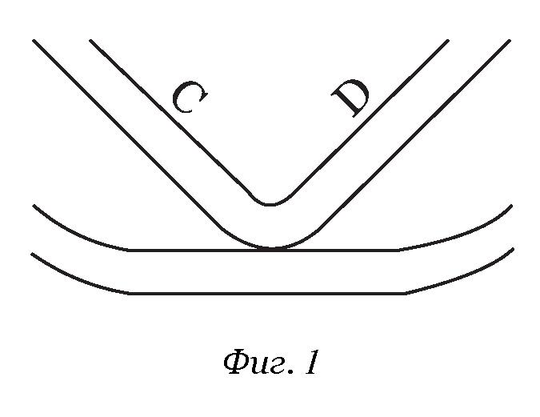
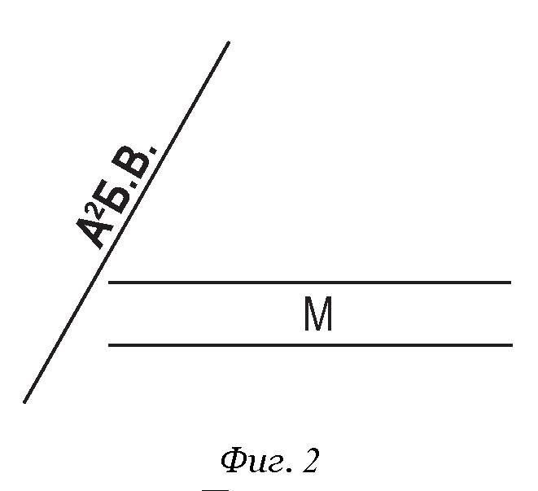
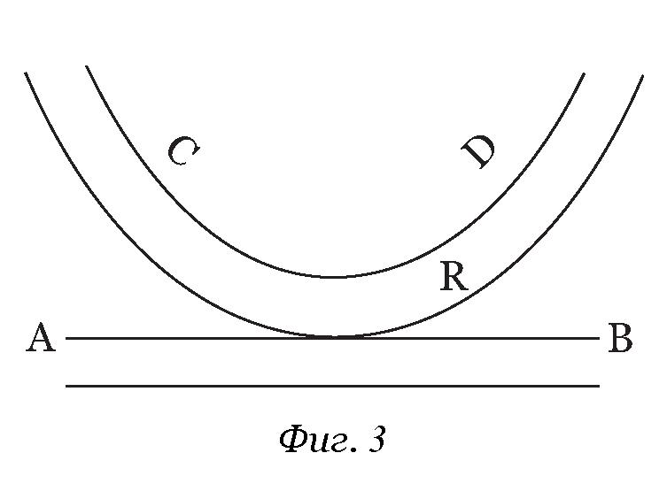
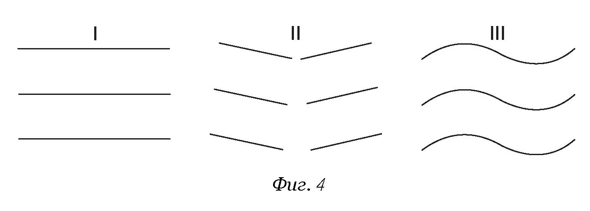
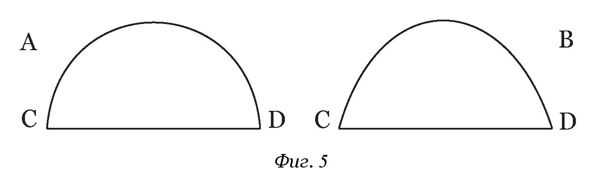

Беседа 1159 от 3877 · Беинса Дуно
Обич към знанието
Само светлият път на Мъдростта води към Истината.
Размишление
Ако ви се даде да развиете темата „Кой е най-важният въпрос за младите“, или „От какво се интересуват младите най-много“, какво бихте писали по нея? Аз ще ви улесня в отговора. Ще ви попитам: От какво най-много се интересува новороденото дете? – От храната, от млякото на майка си. Първата тема, с изучаването на която детето започва, е млякото на майка му. То пристъпва към това мляко, като някой учен професор, и започва да го изследва, да го анализира. От млякото зависи неговото бъдеще. Тогава кой е най-важният въпрос, с който ученикът трябва да се занимава най-първо? Кой е този въпрос, от който зависи неговото бъдеще?
Сега ще направя един паралел. Както от млякото на майката зависи здравословното състояние на детето, доброто състояние на неговия ум и на неговото сърце, на неговите мисли и чувства, тъй и от обичта, от любовта на ученика към знанието зависи неговото правилно развитие. Следователно, ако майката дава най-хубавото мляко на своето дете, тогава неговото здраве, неговите мисли и чувства ще бъдат нормални. Ние разбираме, че такова дете е родено и отгледано по всички правила на разумната природа, затова то е здраво във всяко отношение. Ние не говорим за онези отклонения, които съществуват в живота. По същия закон ученикът трябва да започне с обич към знанието. Знанието е предметът, към който той трябва да се стреми, а Любовта е храната, която той трябва да възприема. Няма ли ученикът любов към знанието, той нищо не може да постигне. Има ли любов към знанието, както детето има любов към млякото на майка си, то ще улесни пътя на неговата душа, ще спомогне за правилното развитие на неговия ум. Понеже всички вие сега минавате в по-горен клас, от вас се изисква любов към знанието. За в бъдеще, ако нямате любов към знанието, вие ще бъдете ученици само по форма, а не и ученици в идейния смисъл на думата. Ученик може да бъде всеки, бил той млад или стар, ако има любов към знанието.
Ще ви задам още един въпрос: Кои са признаците на любовта към знанието? Това са най-елементарните работи на новата философия, на новото разбиране и схващане на нещата. Аз турям едно разграничение между старата и новата философия на живота, която върви съобразно великите закони на природата. Като наблюдавате и изучавате тази жива, разумна природа, тя ще ви разкрие това, което досега не е било достъпно за умовете ви.
Да допуснем, че вие се занимавате с геологията, изучавате земните пластове. Вие може да изучавате техния състав само, а може да изучавате и формата им, дали тия пластове са нагънати, пречупени или хоризонтални.
Фиг. 1

По същия закон, като изучавате човешкия мозък, ще видите, че той е също така набразден, образуван от ред начупени, огънати пластове, които са претърпели ред метаморфози, докато дойдат до такова състояние, в което ги намираме. По гънките на мозъка тече космическата енергия на разумния живот, който душата използва. Учените хора казват, че от гънките на човешкия мозък зависи неговата мисъл. Това значи, че енергията на мисълта тече именно по тия гънки, и по тях пак излиза навън. Те са проводници на енергиите от цялото пространство. Щом тия пластове са огънати, някой учен може да пусне своята сонда в тях и да извлече вода, но ако са хоризонтални, прави, щом пробие в тях дупка за своята сонда, колкото вода има, ще се изгуби, ще потъне надолу някъде, и той не ще може да извлече вода нагоре. Така че ако някой иска да изправи огънатите пластове, какво ще стане? – Водата в тях ще се изгуби.
И тъй, законът, който ние извличаме от тия разсъждения, е следният: Когато много човъркаме, когато много чоплим известен предмет или известен философски въпрос, той най-после изгубва своето съдържание. Това става често с идеята за морала. Ако чоплите много тази идея, най-после моралът потъва някъде дълбоко в земята и вие вече няма да знаете кое е морално и кое не, или кое е право и кое не. И тогава вие съвсем забърквате понятията и разбиранията си за морала.
Фиг. 2

И тъй, проявленията на външната природа се виждат и в нашите прояви, затова ние можем да се ползваме от природата. Щом ние се учим от нея, в това отношение, не можем да изискваме нашия живот да бъде гладък. У младите има желание животът им да върви гладко, да нямат мъчнотии. Трябва да знаете обаче, че всяка мъчнотия съответства на умственото развитие на младия. Една българска поговорка казва: „Какъвто е умът му, такъв е домът му“. Това подразбира, че според степента на неговия ум, такава е и отговорността, която природата му налага. В природата има един велик закон, който определя мъчнотиите на хората според тяхното умствено развитие. Колкото мъчнотиите на един човек са по-големи, толкова този човек седи на по-висок умствен уровен; и колкото мъчнотиите му са по-малки, толкова той седи на по-низък умствен уровен. В това отношение историята ни показва, че най-великите хора в света, които са помогнали за повдигането на човечеството, са имали най-големи мъчнотии, но са ги преодолявали. Следователно всеки от вас може да преодолее каква и да е мъчнотия по един разумен начин.
Да допуснем, че ви дават да скъсате едно дебело гемиджийско въже. За тази цел ви дават само една шевна игла. Как ще скъсате това въже? Можете ли да го скъсате изведнъж? – Не можете. Ще вземете иглата и ще го разнищвате конец по конец. Колко време ще ви отнеме това разнищване? – Много време. Затова първо у вас ще се яви желание да го скъсате изведнъж. Единствените средства, които ви се дават за разнищването на това въже са иглата и времето. Като разнищвате въжето конец по конец, вие ще научите много работи. Какво, например, ще научите? Най-простото нещо, което ще научите, е това, от колко нишки е направено въжето. Какво още ще научите? (– „Търпение. Постоянство. Сръчност.“) Да, сръчност ще придобиете, да можете майсторски да късате въжето, конец по конец, а не по два или по три конеца заедно. Природата не позволява да се късат по два конеца наведнъж, а само по един конец. Скъсате ли два конеца наведнъж, вие нарушавате нейните закони.
Ако разглеждате този въпрос според вашите разбирания, ще кажете, че можете да късате и по два, и по три, и по четири, и по пет конеца наведнъж, но природата, като ти дава на разположение игла и време, не позволява да късаш нито два конеца наведнъж, а само по един конец. Тя казва: „Аз ти давам на разположение време, колкото искаш, но ще късаш въжето конец по конец!“ По колко часа на ден ще късате тия конци? Ще кажете: „За да скъсам въжето скоро, аз ще работя по цял ден“. Не, природата не позволява да късате конците на въжето повече от един час на ден. Правили ли сте опит, по колко конци можете да късате в един час? Ако това въже има 10,000 нишки, правили ли сте опит, по колко нишки може да късате в една минута, и то по всички правила, без да бързате. Конците на това въже са така оплетени, че като хванеш единия, закачаш другия, а природата казва: „Ще разнищваш конците един по един, без да ги късаш, без да им връзваш възли“. Как мислите, колко време ще ви отнеме да скъсате едно такова дебело въже? (– „Пет часа.“)
Добре, ще ви дам едно здраво въже, да видим дали ще можете за пет часа да го разнищите конец по конец. Голяма сръчност се изисква!
Фиг. 3

Ако минава вода през глинести пластове, каква ще бъде тя? – Нечиста. През какви пластове трябва да минава водата, за да бъде най-чиста, най-хубава? – През песъчливи пластове. Тогава, по аналогия на това, ще ви запитам: За да бъде животът ви най-чист, най-хубав, през какви пластове трябва да премине? – През грапави пластове, защото те отговарят на песъчливите пластове в природата. Де се намират тия грапави пластове у вас? – В ума. Глинестите, тинестите пластове се намират в сърцето. Затова, именно, аз ви говорих за чистата, за правата мисъл. Тази мисъл ви е потребна, за да придобиете възвишения живот, който ще внесе подобрение у вас. Чистият живот се ползва от благата и придобивките на живота, но не и от удоволствията в живота.
Какво се разбира под думата „удоволствие“? Ще ви приведа няколко примери, да видите кое съвременният свят нарича удоволствие. Срещате един млад ученик, турил цигара в уста, разхожда се самодоволно, пуши. Пушенето е удоволствие, което не помага за развитието на ученика. Виждам друг ученик, той пък надигнал чашка ракия или винце, пие. Казва: „Аз пия ракия, защото тя ще стимулира стомаха ми, а от това и умът ми ще заработи по-усилено“. Има ред учени хора, лекари, които препоръчват пиене на вино в малко количество. Природата обаче е предвидила само едно питие – водата. Тя казва: „Ако искаш умът ти да бъде бистър, ясен и да работиш добре, трябва да пиеш само вода. Намери най-хубавата, най-чистата вода и от нея пий!“ Ако искаш да пушиш, тя казва: „Ти трябва да мислиш!“ За пушене, за кадене се говори и в Писанието. В Новия Завет се казва, че молитвите на праведните възлизали нагоре като дим, носени били като в кадилница. Значи горение трябва да има навсякъде. В този случай мисълта облагородява ученика. Мисълта на всеки ученик трябва да гори! Ученикът може да прави разни физически упражнения, може да рисува, да свири, да учи, да се занимава с какво и да е изкуство, стига всички тия неща да развиват неговия ум. Той трябва да се пази от всички безполезни удоволствия, които спират развитието на неговия ум.
Да допуснем, че вие сте даровит, способен ученик, имате голяма обич към знанието, но същевременно нямате баща, майка, нито приятели, които да ви помогнат, нито средства за учене. Питам ви: По кой начин ще си доставите средства? (– „Ще упражняваме занятието, което имаме, и от него ще се ползваме.“) Да кажем, че вие можете да свирите, да рисувате, или да шиете, да правите обуща. Кое от всички тия занятия и изкуства в дадения случай ще бъде най-подходящо? Кое трябва да използвате? (– „Правене обуща и шиене дрехи.“) Значи вие бихте предпочели обущарството и шева пред изкуствата. Питам ви: Как мислите, според вас позволено ли е на ученика да взима пари назаем от другарите си? Да си помагате взаимно, то е друг въпрос, но аз говоря за правене заеми, с обещание, че след няколко дни ще ги върнете, а при това минават месеци, и вие не можете да се издължите. Освен това колко пари трябва да искате назаем? (– „Колкото можем да върнем и колкото да си купим хляб.“) Да, така е, колкото ви трябват за хляб. Ами колко хляб може да изяде един ученик на ден? Половин килограм хляб достатъчно ли е?
Сега ние зачекваме един от съществените въпроси – въпросът за доволството. Човек още от младини трябва да учи закона на доволството. Ученикът всякога трябва да има най-хубав хляб, но каквото количество и да има, всякога трябва да е доволен. Той няма право да изказва недоволство от количеството на храната си, защото всеки ден носи своето благо. Днес може да има скромна храна и в малко количество, утре ще бъде по-богата и повече. Но каквото има днес, ученикът трябва да бъде напълно доволен, не трябва да иска повече. Колкото и малко хляб да има, той трябва да го погледне, да му се усмихне, да го помилва и да каже: „Благодаря и за това, двама заедно ще учим“. Тогава и хлябът ще му се усмихне и ще каже: „С тебе заедно лесно ще научим урока“. (– „Ние още не сме говорили на хляба.“) Ще дойде ден, когато ще говорите на хляба. Христос казва: „Аз съм живият хляб“. Значи ще дойде ден, когато ще говорите с този жив хляб. Каква промяна ще стане с вас, ако вие имате живия хляб?
Ще ви обясня това с един пример. Представете си, че вие сте един господар, който се нуждае от работници, и всеки ден отивате на пазара да си цените такива. Виждате там един работник, който чака да го потърси някой, да се услови на работа. Вие го взимате у дома си, и той всеки ден дохожда да ви работи. Един ден този работник получава голямо наследство, половин милион долари, от свой чичо в Америка. Питам: Ще намерите ли на другия ден този работник на пазара да чака за работа? – Няма да го намерите. От ваше гледище прав ли е, след като този човек е получил половин милион долари, да отива пак на пазара с мотиката и да чака някой да го услови на работа? Кое заставя работника да напусне вече своята работа? – Парите. Те му улесняват живота. Питам: След като получи парите, с каква работа трябва да се заеме? (– „Да започне да учи.“) Ако този работник, след като добие това голямо наследство, се откаже от учене, напусне училището и намира, че знания не му трябват, защото има с какво да се препитава, той не разрешава задачата си правилно. В такъв случай беднотията е за предпочитане, защото го кара да работи, да учи, а богатството го разваля. Той не иска да работи, не ще да учи. Живият хляб, това са благоприятните условия на живота, които всеки разумен човек трябва добре да използва. С това искам да ви наведа на мисълта, че благоприятните условия в живота отклоняват неразумния човек от неговата права посока, а разумният човек те подкрепят в правата посока на неговия път. Тази е единствената причина, поради която, при сегашното ви развитие, мъчнотиите са повече, отколкото благоприятните условия. Невидимият свят или разумната природа иска да ви застави да учите, както любещата майка иска да застави своите деца да учат. И когато те не учат, тя ги поставя в много неблагоприятни условия, при големи мъчнотии, да пожелаят да учат. Те имат нужда от знания.
И тъй, кой е най-важният въпрос, според вас, който трябва да занимава ученика? – Знанието. Това знание трябва да съдържа в себе си качество на вътрешно смирение. Всеки ден, като се разширява съзнанието на ученика, трябва да се увеличава и обичта му към знанието, към проучаване живота. И при събирането на знанията се забелязват същите явления, каквито и при земните пластове. Както водата се е събирала с хиляди години в тия пластове, без да излиза навън, така и човешкото знание се е складирало с години в съзнанието му, без да излиза навън. Разумният ученик може да прокопае тия пластове, и събралата се в тях вода ще бликне навън, ще излезе на повърхността. Де ще се яви този живот, това знание? – В съзнанието на човека. И сега, понеже вие се приготовлявате за света, тази енергия трябва да излезе вън от вас, да бъдете носители на новото учение. Или, казано на научен език: Ученият човек трябва да бъде изразител на ония извори вътре в себе си, чрез които може да се обработва външната растителност. Растителността е емблем на вътрешния живот в човека. Най-хубавите желания, най-хубавите чувства, които имате, могат да се реализират само от един прекрасен ум. Затова всеки от вас трябва да се стреми да има един прекрасен, отлично развит ум и с него да работи.
От ваше гледище кой предмет в живота е най-важен, или кой клон от науката засега е най-важен? В съвременното общество кои науки седят на първо място? (– „Естествените науки и математиката.“) Всички съгласни ли сте с това? Кое е най-важното в първо отделение? С какво започва учителят? С откриването на буквите, нали? Ами вие с какво трябва да започнете? Най-първо започнете с изучаването на лицето си. Аз ви препоръчвам да изучавате челото си, да го измервате, да наблюдавате има ли линии, или не. После изучавайте носа си: ширината и формата му. След това изучавайте очите си, ушите си, веждите си, главата си и т.н. Вие не можете да запомните цялото си лице, но има известни черти на челото ви, които определят направлението на вашия ум.
Фиг. 4

Ще ви приведа един анекдот, който илюстрира добре този род хора. Те бавно разрешават въпросите. В едно село започнали да строят баня. След известно време тя била почти готова, оставало само да я постелят с мраморни плочки, но понеже това щяло да коства скъпо, селяните решили най-после да я постелят с дъски. Сега обаче възникнал спор, дали дъските трябва да бъдат изгладени или неизгладени. Явяват се две мнения: едните били за изгладени дъски, а другите – за неизгладени. Спорът се продължавал цели осем години и банята останала недовършена. Най-после идва един инспектор, разглежда положението на работата и казва: „Ще поставите една дъска изгладена за тези, които настояват за такива дъски, и една дъска неизгладена за тези, които искат неизгладени дъски, та да се задоволят и двете желания“. Питам: Какво заключение ще извадите, ако влезете в една такава баня, която е постлана с два вида дъски? – Ще разберете, че са работили две сили, имало е две мнения.
Фиг. 5

Апостол Павел казва: „Слабият във вярата зеле да яде“. Човек, който има слаба вяра, е страхлив. Когато страхът има преобладаващо влияние върху човека, това се дължи на слаба вяра. Иди проповядвай на един страхлив човек, че има Божи Промисъл, че трябва да вярва в Бога. Той ще ти каже: „Какво ми говориш за вяра? Здрави крака трябва да имам. Плюй на краката си и бягай!“ Можеш ли да проповядваш на заека, че има Божи Промисъл, че трябва да вярва в Бога? – Не. Заекът казва: „Аз вярвам на задните си крака и зная, че като бягам нагоре, по-лесно ми е“. От свое гледище той е прав. Ако отидете при една голяма планинска скала, как мислите, тя страхлива ли е? Ако тя има съзнание, ще ви каже: „И при най-големите бури в света, аз няма да се помръдна от мястото си!“ Защо? Защото е планина, а не заек. Оттук ще извадя един велик закон, който регулира нещата в природата, а именно: Слабите неща се отвяват от силите на природата по всички посоки. Един откъснат лист от някое дърво се развява по всички посоки, но седи ли този лист на дървото, вятърът не го развява, а само го огъва около центъра. Откъснатият лист се движи и в периферията си, и в центъра; здравият лист, който е на дървото, се движи само в периферията, а в центъра остава спокоен. В това отношение хора, които имат морален устой в себе си, издържат на всички бури в света. Затова, именно, вие трябва да имате едно правилно схващане за живота.
Сега ще ви запитам: Кое е най-важното качество на младия човек? Или: С какво се характеризира младостта? До известна възраст вие се чувствате млади, но след известно време чувствате, че сте остарели. До момента, в който сте се чувствали млади, наистина сте млади, но от момента, в който започвате да се мислите, че сте стар, и в съзнанието ви става една промяна. По какво се отличава по-раншното ви състояние от последното? Какво всъщност сте изгубили и какво ново е влязло във вас?
Ще ви улесня в разсъжденията с един пример. Представете си, че вие, като ученик, имате една кесия, пълна със златни звонкови пари. Пипате я от време на време в джоба си, тя ви стимулира. Пълната кесия изразява младостта. Тя е твърда, коравичка, тежка, защото е пълна. Когато усещате нейната тежест и коравина, тя ви придава стабилност, и вие вървите изправен, горд, смел. Който ви види в тази поза, още веднъж се обръща да ви погледне. Приятно е да видиш самоуверен, смел човек в света! Представете си, че след известно време вие бръквате в джоба си, пипате кесията и какво усещате? – Тя станала мекичка и по-лека. Вие изпадате в едно особено психологическо състояние и казвате: „Как е възможно да стане това нещо?“ Вие се чудите как се изпразнила кесията ви, как е олекнала толкова! Някой хитър, ловък човек извадил незабелязано вашата пълна кесия, турил вместо нея една празна и си заминал. Какво настава сега у вас? – Една тъга, една отпадналост. Вие изгубвате смелостта си и вървите с увиснала глава, отпаднал духом. Празната кесия изразява старостта. Старият човек чувства, че някакво богатство от него е задигнато, заграбено. Той казва: „Отидоха младините!“ Как? – „Не зная.“ Пипа кесията си, но тя вече е лекичка, мекичка, и си казва: „Едно време краката ми държаха, но сега, не зная какво стана, не държат“. Трябва да знаете следното: Всички хора, които живеят със сърцето си, остаряват по-скоро, отколкото тия, които живеят с ума си; или, с други думи казано: Хората на чувствата остаряват по-скоро от хората на трезвата мисъл. Всеки човек, който мисли трезво, разумно, той винаги ще бъде млад. Едно от качествата на младия човек е да мисли право. Затова правата мисъл е необходима за всинца ви.
Сега вие се готвите да влезете в новия живот. Какво ви е нужно за този живот? Всички трябва да работите над новите положения в живота, защото у човека има двойни органи, които той трябва да разработва. Засега човек работи с лявото полушарие на мозъка и с дясната ръка, а дясното полушарие на мозъка и лявата ръка са пасивни, те не взимат участие в работата. Лявото полушарие представлява жената, която работи цял ден вкъщи, а мъжът ходи натук-натам с цигара в ръка, разисква, философства и казва: „Жената ще се погрижи за всичко“. Има известна аналогия между живота на циганина и това, което сега ви казвам. Циганинът, като се ожени, не работи вече. Той взима няколко цигари в джоба си, пуши, разхожда се, среща се с този или онзи приятел, разговаря се, не се грижи за нищо – жена му го храни. Циганката с тояга в ръка и с торба на гърба, хлопа от врата на врата – проси. Има изключения от това, разбира се, то не е общо правило. Някои цигани са железари и работят много.
Аз взимам като пример живота на циганите, за да изтъкна в по-ярки черти отношенията между сърцето и ума, или между чувствата и мислите в човека. Често у хората се забелязва същия този атавизъм, както у циганите, оставят чувствата да разрешават най-важните въпроси. Не, чувствата, т.е. сърцето или жената в човека не може да разреши най-важните въпроси. Циганинът научава жена си да проси оттук-оттам, но с просия работа не става. Ами ако всички хора, от които проси, са бедни, какво ще ѝ дадат? Просията не е изкуство. Тя трябва да научи друго нещо. Казвам: Сърцето у нас не може да разреши въпросите, умът трябва да се впрегне на работа. Започне ли умът да работи, сърцето трябва да е в сдружение с него. Афектирате ли се, отпадате ли духом, обезсърчавате ли се, това са чувствания, настроения, които не разрешават въпросите. Умът поставя нещата върху един положителен закон и казва: „Аз съм се родил в света, Бог ми е дал условия да се развивам, и аз трябва да работя“. Хора, които се ръководят от своя ум, са разумни и разрешават въпросите правилно. Такъв човек размишлява, съпоставя нещата на място и казва: „Ако постъпя по този начин, например, животът ми ще се оправи“. От това гледище засега всички живеете двояк живот, но трябва да придобиете една нова опитност, едно ново схващане. В стария живот ще се обезсърчавате, а в новия живот ще се насърчавате. Мисълта преодолява в него. Винаги ще поставяте паралел между тия два живота и така ще вървите напред. Вие още не можете да живеете само в новия живот, но ще минавате ту в единия, ту в другия.
В беседите си аз направих паралел между четирите живота, които текат у вас. Старозаветният живот представлява сбор от наследени качества на вашите деди и прадеди. Ще изучавате този живот, ще разпознавате и себе си. Аз мога да изнеса тия четири живота и в научна форма. Те представляват четирите съзнания у човека. Де се намира подсъзнателният и свръхсъзнателният живот? – Те са двата полюса на Божествения живот. Подсъзнателният живот е този на ангелите, а свръхсъзнателният е животът на Божествения свят. Съзнателният и самосъзнателният живот представляват двата полюса на човешкия живот. Съзнателният живот е този на светиите, на напредналите духове, които са минали преди нас; самосъзнателният живот е нашият индивидуален живот. При съзнателния и подсъзнателния живот вие трябва да изучавате една област от живата природа, която има връзка със сегашния ви живот. В подсъзнанието, запример, са складирани всички възможности за реализиране на нещата.
Питам: Как ще постигнете това? – Само ако знаете законите. Например, ти искаш да постигнеш нещо добро. Вложи тази мисъл в подсъзнанието си с пълна вяра, и тя ще се реализира. Внеси тази мисъл без страх, без съмнение, и висшите същества, които живеят там, ще ти помогнат. Ти само напиши заявлението си до тях, но конкретно, определено, и го остави. Те не обичат общо говорене. Искате да станете утре точно в 3 и половина часа. Какво ще направите? Аз съм ви казвал и друг път: Ще вложиш в подсъзнанието си мисълта, че искаш да станеш сутринта в 3 и половина часа. Ще кажеш тази мисъл само веднъж, без да я повтаряш. При повторението законът не работи. Кажеш ли мисълта веднъж, забрави я, ще видиш, че сутринта ще станеш точно в 3 и половина часа.
Някои от вас имате материални затруднения. Направете същия опит. Кажете си: „Идната година на същия този ден ще имам на разположение 1000 лева“, например. Вложи тази мисъл в подсъзнанието си и ще видиш, че идната година на този ден ще имаш 1000 лева. Усъмниш ли се, законът не работи. Този закон работи само при пълна вяра от ваша страна. Да кажем, че някой от вас има слаба памет. Ако иска да усили паметта си, той може да се ползва от същия закон. Всяка вечер, като си ляга, да влага в подсъзнанието си мисълта: „От утре моята памет ще бъде по-силна“. Като внася тази положителна мисъл в подсъзнанието си, паметта му постепенно ще се усилва. Всеки човек, който иска да корени своите недъзи, да изправя своя живот, трябва да има положителна, права мисъл. Каквото му е нужно за живота, той трябва да го вложи в подсъзнанието си, и висшите същества ще се притекат в услуга.
И тъй, правилното разбиране и прилагане на законите ще ви избави от ред ненужни страдания в живота. Да допуснем, че вие сте саможив човек, песимист по характер, но искате да придобиете правилни отношения към хората. Вложете с вяра това ваше желание в подсъзнанието си, като фиксирате дори датата, до която искате да стане това, и ще видите, че до този ден ще придобиете това, което сте желали. Тази енергия ще потече във вас тъй, както водата тече през пясъчните пластове и чрез сонда излиза навън. Всичко ще дойде на своето време. Обаче законът на внушението изисква специфично време и специфично състояние на човека. Какво значи това? Във всяко време не можете да си внушавате. Например, ако си внушавате, когато сте разстроени или раздразнени, не можете да имате добри резултати. Всеки, който иска да вложи в подсъзнанието си една велика мисъл, която да се реализира, той трябва да избере за това най-хубавото разположение на духа си. Колкото човек е по-неразположен, по-неспокоен, толкова по-бавно и несигурно работи законът на внушението; колкото човек е по-разположен, законът работи по-добре.
Та когато говорим за любовта, за светлината, за мира и за радостта, ние подразбираме ония Божествени условия, при които способностите на човека се развиват правилно. Без тия способности умът не може да се развива, и мисълта не може да дойде. Само по този начин човек може да работи и да премахне всички мъчнотии от пътя си. На първо място вие трябва да развивате вашите способности, вашите таланти. Каквато и малка способност да имате, непременно гледайте да я развивате, защото до известна степен от нея зависи проявата на вашия живот. Живата природа ще работи върху вас именно чрез тази способност. Този закон работи еднакво за всички хора. Да имате силна, добра памет, това е богатство. Но трябва да знаете, че паметта зависи от чувствата. Колкото чувствата на един човек са по-необуздани, толкова и паметта му е по-слаба. Когато паметта му започва да отслабва, това показва, че става разслабване в неговите чувства, той се разсейва и не помни – – скоро забравя. Паметта на хората отслабва и от големи скърби и страдания, от голям страх и от силни умствени сътресения. Ето защо, за да може ученикът да се развива правилно, за да води нормален живот, трябва да се намира в хармонична среда. Всеки от вас може да си създаде хармонична среда за своето развитие. Даже и при най-неблагоприятни условия да попадне, той може да си създаде от тях една хармонична среда, но за това се изисква голяма устойчивост и постоянство.
Ние имаме добър пример от такова постоянство с градинаря, който се намира при реката долу, близо до линията. Преди няколко години той купил това място, което е било почти пустиня. Той пренасял пръст, насипвал го, разкопавал го, торил го и така облагородил цялото място. Днес на това място има хубава зеленчукова и овощна градина. Първоначално земята е била толкова бедна, че селяните от околните места му се смеели, дето се е заел с такава неблагодарна работа, и му казвали, че и трудът, и времето, и средствата му ще отидат напразно. Но този човек работил с постоянство и самоувереност, и днес се радва на добри резултати. Идея имал той! Този градинар може да ви послужи за пример, че при силно желание човек може да реализира всяка своя идея. И вие можете да работите по същия начин. Ако имаме човек с обикновени способности дори, при усилена 20-годишна работа върху себе си той ще може да облагороди сърцето си и да просвети своя ум. Работа се изисква от всинца ви!
Аз ви наведох примера с въжето, показах ви как трябва да се къса. То представлява мъчнотиите във вашия живот, които трябва да късате, да разнищвате с игла. Всяка мъчнотия е един обръч във вашия живот, който ви спъва. Обръчи са потребни за каците, но живите дървета нямат нужда от тях. Ако на едно живо дърво се турят обръчи, то не може да расте и се разваля. Тия обръчи трябва да се премахнат от него! Обръчите са нужни за хора, които живеят несъзнателен живот, но за нас, които живеем съзнателен живот, никакви обръчи, никакви въжета не трябват. Ние сме живи дървета, които трябва да растат и да се развиват при пълна свобода. От това гледище вие трябва да изучавате Любовта и нейното приложение в мисълта. Аз не говоря за проявата на Любовта в сърцето, в чувствата, но говоря за проявата на Любовта в ума, в мислите.
Вие трябва да изучавате и светлината, но не тази, която би ви пречила в пътя, а тази светлина, която осветява пътя ви и ви насърчава. Запример, вечерно време ти се заблудиш в някоя местност, луташ се натук-натам, не знаеш де си, но яви ли се първият лъч на слънцето, той хвърля светлина на пътя ти и ти се ориентираш. Вие трябва да изучавате и мира, който внася вътрешно спокойствие в човека. Кога е мирен човек? Военният е мирен, когато носи оръжието си на рамо. Оръжието представлява за него пълната кесия. Той я побутва и казва: „Мир имам в душата си!“ Защо? – „Кесията ми е пълна.“ Когато кесията му е празна, той няма мир. Щом имаш любов, имаш и мир. Щом имаш хляб, гладен няма да бъдеш. Щом имаш вода, жаден няма да бъдеш. Любовта носи живот; животът носи светлина, а светлината носи мир. Значи имаме ли любов, ще бъдем мирни; имаме ли светлина, ще знаем де отиваме. Най-после вие трябва да изучавате радостта, да знаете, че ще постигнете това, към което се стремите.
И тъй, като ученици, ще гледате реално на живота. Задачата на всички ученици е да имате не само теоретически познания за живота, но и практически. Всичко, което учите в Школата, трябва да го прилагате. Освен това правете и някои опити сами. Нека новото учение, новият живот се въплътят във вас.
Само светлият път на Мъдростта води към Истината!